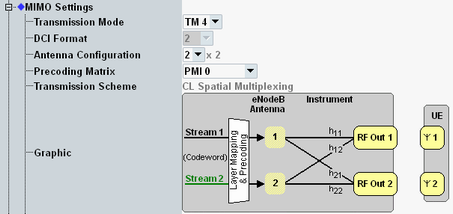

This section describes general MIMO connection settings applicable to most transmission modes.
For background information, see "MIMO and Beamforming".
For carrier aggregation scenarios, you can configure all MIMO settings per component carrier.

Selects the LTE transmission mode. The available values depend on the active scenario, see Table "Transmission scheme overview".
For eMTC, only TM 1 is supported. For frame structure type 3, the supported transmission modes are 1 to 4, 8 and 9.
In the state "Connection Established", the parameter can be changed within the following groups: TM 1/7, TM 2/3/4/6/8/9.
- TM 7 plus normal cyclic prefix, plus "number of PDCCH symbols" = 4
- TM 8 plus extended cyclic prefix
Selects the downlink control information (DCI) format. The available values depend on the transmission mode. For most transmission modes, the DCI format is fixed.
For scheduling type "Follow WB CQI-RI", only DCI format 2A is supported. Changing the format to 1A modifies the scheduling type.
For 256-QAM, DCI format 1A is not supported.
Remote command:Selects the number of downlink TX antennas. The allowed values depend on the selected scenario and transmission mode. The setting is available for transmission mode 1 to 6.
The number of downlink RX antennas depends on the selected scenario and is displayed for information.
For MIMO 4x2, option R&S CMW-KS521 is required.
For MIMO 4x4, option R&S CMW-KS540 is required.
Remote command:Selects the precoding matrix for transmission mode 4, 6 and 9. For TM 8, see "Precoding Matrix".
Depending on the scheduling type, the downlink signal follows the reported PMI value. In that case, the configured PMI value is used as initial value until a PMI report has been received.
The meaning of the PMI values is defined in 3GPP TS 36.213, section 7.2.4.
With the setting "random PMI", the PMI value is selected randomly as defined in 3GPP TS 36.521, annex B.4.1 and B.4.2. The setting is available for transmission mode 9 with two TX antennas if no "Follow..." scheduling type is active.
Remote command:Displays the PDSCH transmission scheme resulting from the settings.
The displayed value does not reflect transmission scheme changes due to reported rank indicator values. TM 4 combined with follow RI and RI=1 results in transmit diversity.
Remote command: